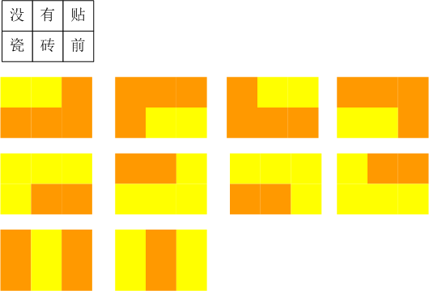
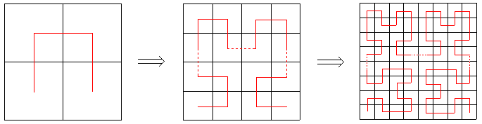

第八届蓝桥杯国赛解题报告
——The Doors《Riders On The Storm》
因为做第六届的时候对第三方评测产生了怀疑，所以准备先做官网能评测的真题。第十届和第九届的真题在官网上找不到，第八届能找到，先写第八届。
36进制
题目描述
对于16进制，我们使用字母A-F来表示10及以上的数字。
如法炮制，一直用到字母Z，就可以表示36进制。
36进制中，A表示10，Z表示35，AA表示370
你能算出 MANY 表示的数字用10进制表示是多少吗?
分析
直接让电脑算吧
#include <bits/stdc++.h>
using namespace std;
inline int getNum(char c) {
return 10 + c - 'A';
}
int main() {
cout << 36 * 36 * 36 * getNum('M') + 36 * 36 * getNum('A') + 36 * getNum('N') + getNum('Y') << endl;
return 0;
}
结果是1040254
瓷砖样式
题目描述
小明家的一面装饰墙原来是 3*10 的小方格。
现在手头有一批刚好能盖住2个小方格的长方形瓷砖。
瓷砖只有两种颜色：黄色和橙色。
小明想知道，对于这么简陋的原料，可以贴出多少种不同的花样来。
小明有个小小的强迫症：忍受不了任何2*2的小格子是同一种颜色。
（瓷砖不能切割，不能重叠，也不能只铺一部分。另外，只考虑组合图案，请忽略瓷砖的拼缝）
显然，对于 2*3 个小格子来说，口算都可以知道：一共10种贴法，如【p1.png所示】

但对于 3*10 的格子呢？肯定是个不小的数目，请你利用计算机的威力算出该数字。
分析
题面明示“请你利用计算机的威力算出该数”，暴搜即可。
注意搜出来的解可能有重复，去重方法是把整个图视为一个字符串，set去重一下即可。
//
// Created by Visors on 2020/11/12.
//
// 题目名：TODO
// 题目来源：TODO
// 题目链接：TODO
// 算法：CiZhuanYangShi.cpp
// 用途：TODO
// 时间复杂度：O(TODO)
//
#include <bits/stdc++.h>
using namespace std;
int n, m;
long long ans = 0;
vector<vector<int> > G; // 0 empty, 1 yellow, 2 orange
bool isOK() {
for (int i = 0; i < n - 1; i++)
for (int j = 0; j < m - 1; j++)
if (G[i][j] == G[i + 1][j] && G[i][j] == G[i][j + 1] && G[i][j] == G[i + 1][j + 1]) return false;
// for (const auto &i:G) {
// for (auto j:i)
// cout << j;
// cout << endl;
// }
return true;
}
void dfs(int x, int y) {
// cout << "---------------\n";
// cout << x << ' ' << y << endl;
// 贴黄色
// 横着贴
if (y + 1 < m && G[x][y + 1] == 0) {
G[x][y] = G[x][y + 1] = 1;
bool okay = true;
for (int i = 0; i < n; i++) {
bool flag = false;
for (int j = 0; j < m; j++) {
if (G[i][j] == 0) {
dfs(i, j);
okay = false;
flag = true;
break;
}
}
if (flag) break;
}
if (okay && isOK()) ans++;
G[x][y] = G[x][y + 1] = 0;
}
// 竖着贴
if (x + 1 < n && G[x + 1][y] == 0) {
G[x][y] = G[x + 1][y] = 1;
bool okay = true;
for (int i = 0; i < n; i++) {
bool flag = false;
for (int j = 0; j < m; j++) {
if (G[i][j] == 0) {
dfs(i, j);
flag = true;
okay = false;
break;
}
}
if (flag) break;
}
if (okay && isOK()) ans++;
G[x][y] = G[x + 1][y] = 0;
}
// 贴橙色
// 横着贴
if (y + 1 < m && G[x][y + 1] == 0) {
G[x][y] = G[x][y + 1] = 2;
bool okay = true;
for (int i = 0; i < n; i++) {
bool flag = false;
for (int j = 0; j < m; j++) {
if (G[i][j] == 0) {
dfs(i, j);
flag = true;
okay = false;
break;
}
}
if (flag) break;
}
if (okay && isOK()) ans++;
G[x][y] = G[x][y + 1] = 0;
}
// 竖着贴
if (x + 1 < n && G[x + 1][y] == 0) {
G[x][y] = G[x + 1][y] = 2;
bool okay = true;
for (int i = 0; i < n; i++) {
bool flag = false;
for (int j = 0; j < m; j++) {
if (G[i][j] == 0) {
dfs(i, j);
flag = true;
okay = false;
break;
}
}
if (flag) break;
}
if (okay && isOK()) ans++;
G[x][y] = G[x + 1][y] = 0;
}
}
int main() {
ios_base::sync_with_stdio(false);
cin.tie(nullptr), cout.tie(nullptr);
cin >> n >> m;
G.resize(n, vector<int>(m, 0));
dfs(0, 0);
cout << ans << endl;
return 0;
}
不去重结果是105760，正确的去重后的结果是101466，几十秒内应该能跑出来。
希尔伯特曲线
题目描述
希尔伯特曲线是以下一系列分形曲线 Hn 的极限。我们可以把 Hn 看作一条覆盖 2^n × 2^n 方格矩阵的曲线，曲线上一共有 2^n × 2^n 个顶点(包括左下角起点和右下角终点)，恰好覆盖每个方格一次。

Hn(n > 1)可以通过如下方法构造：
- 将 Hn-1 顺时针旋转90度放在左下角
- 将 Hn-1 逆时针旋转90度放在右下角
- 将2个 Hn-1 分别放在左上角和右上角
- 用3条单位线段把4部分连接起来
对于 Hn 上每一个顶点 p ，我们定义 p 的坐标是它覆盖的小方格在矩阵中的坐标(左下角是(1, 1)，右上角是(2^n, 2^n)，从左到右是X轴正方向，从下到上是Y轴正方向)，定义 p 的序号是它在曲线上从起点开始数第几个顶点(从1开始计数)。
以下程序对于给定的n(n <= 30)和p点坐标(x, y)，输出p点的序号。请仔细阅读分析源码，填写划线部分缺失的内容。
#include <stdio.h>
long long f(int n, int x, int y) {
if (n == 0) return 1;
int m = 1 << (n - 1);
if (x <= m && y <= m) {
return f(n - 1, y, x);
}
if (x > m && y <= m) {
return 3LL * m * m + f(n - 1, ________________ , m * 2 - x + 1); // 填空
}
if (x <= m && y > m) {
return 1LL * m * m + f(n - 1, x, y - m);
}
if (x > m && y > m) {
return 2LL * m * m + f(n - 1, x - m, y - m);
}
}
int main() {
int n, x, y;
scanf("%d %d %d", &n, &x, &y);
printf("%lld", f(n, x, y));
return 0;
}
分析
无论是什么级别的图，横竖对半分成四半后，都满足编号左下<左上<右上<右下，很容易想到分治处理本题。
读罢代码，可知m表示四分之一区域的边长。第一个if处理的是左下角，第二个if处理的是右下角，那么右下角的编号，显然只需要在已知三个四分之一区域的编号和（$3m^2$）再加上分治求解的部分即可。
由于右下角的部分是逆时针旋转了90度的结果，传入坐标时我们也变换一下方向。横线处应填m-y+1。
吐槽
分形之城？？
发现环
题目描述
小明的实验室有N台电脑，编号1~N。原本这N台电脑之间有N-1条数据链接相连，恰好构成一个树形网络。在树形网络上，任意两台电脑之间有唯一的路径相连。
不过在最近一次维护网络时，管理员误操作使得某两台电脑之间增加了一条数据链接，于是网络中出现了环路。环路上的电脑由于两两之间不再是只有一条路径，使得这些电脑上的数据传输出现了BUG。
为了恢复正常传输。小明需要找到所有在环路上的电脑，你能帮助他吗？
输入
第一行包含一个整数N。
以下N行每行两个整数a和b，表示a和b之间有一条数据链接相连。
对于30%的数据，1 <= N <= 1000
对于100%的数据, 1 <= N <= 100000， 1 <= a, b <= N
输入保证合法。
输出
按从小到大的顺序输出在环路上的电脑的编号，中间由一个空格分隔。
样例输入
5
1 2
3 1
2 4
2 5
5 3
样例输出
1 2 3 5
资源约定
峰值内存消耗 < 256M
CPU消耗 < 1000ms
分析
图论水题，记录每个点来时的点，当搜到一个点的非来时点的邻点被访问过时，则出现环，沿着来时点把环记录下来即可。
参考代码
//
// Created by Visors on 2020/11/12.
//
// 题目名：发现环
// 题目来源：第八届蓝桥杯国赛
// 题目链接：http://lx.lanqiao.cn/problem.page?gpid=T453
// 算法：DFS
// 用途：找唯一环
// 时间复杂度：O(n+m)
//
#include <bits/stdc++.h>
using namespace std;
typedef pair<int, int> Edge;
vector<Edge> edges;
vector<int> heads;
vector<int> paths;
vector<bool> vis;
vector<int> ans;
inline void addEdge(int u, int v) {
edges.emplace_back(v, heads[u]);
heads[u] = edges.size() - 1;
}
bool flag = false;
void dfs(int u) {
vis[u] = true;
for (int i = heads[u]; ~i; i = edges[i].second) {
if (flag) return;
int &v = edges[i].first;
if (vis[v]) {
if (v != paths[u]) {
ans.push_back(u);
for (int j = paths[u]; j != v; j = paths[j])
ans.push_back(j);
ans.push_back(v);
flag = true;
break;
}
} else {
paths[v] = u;
dfs(v);
}
}
}
int main() {
ios_base::sync_with_stdio(false);
cin.tie(nullptr), cout.tie(nullptr);
int n;
cin >> n;
heads.resize(n);
vis.resize(n);
paths.resize(n);
fill(heads.begin(), heads.end(), -1);
for (int i = 1, u, v; i <= n; i++) {
cin >> u >> v;
u--, v--;
addEdge(u, v);
addEdge(v, u);
}
dfs(0);
sort(ans.begin(), ans.end());
cout << ans[0] + 1;
for (int i = 1; i < ans.size(); i++) cout << ' ' << ans[i] + 1;
cout << endl;
return 0;
}
对局匹配
题目描述
小明喜欢在一个围棋网站上找别人在线对弈。这个网站上所有注册用户都有一个积分，代表他的围棋水平。
小明发现网站的自动对局系统在匹配对手时，只会将积分差恰好是K的两名用户匹配在一起。如果两人分差小于或大于K，系统都不会将他们匹配。
现在小明知道这个网站总共有N名用户，以及他们的积分分别是A1, A2, … AN。
小明想了解最多可能有多少名用户同时在线寻找对手，但是系统却一场对局都匹配不起来(任意两名用户积分差不等于K)？
输入
第一行包含两个个整数N和K。
第二行包含N个整数A1, A2, … AN。
对于30%的数据，1 <= N <= 10
对于100%的数据，1 <= N <= 100000, 0 <= Ai <= 100000, 0 <= K <= 100000
输出
一个整数，代表答案。
样例输入
10 0
1 4 2 8 5 7 1 4 2 8
样例输出
6
再比如，样例输入：
10 1
2 1 1 1 1 4 4 3 4 4
样例输出：
8
资源约定
峰值内存消耗 < 256M
CPU消耗 < 1000ms
分析
看了下题，想了个解法，觉得复杂度不够，上网看了下题解，没看懂题解和题目之间意思的共通之处，遂放弃。时间不多，先整理几个很久没用的算法和数据结构。
Table of Contents
万祚全
本科在读
My research interests include distributed robotics, mobile computing and programmable matter.